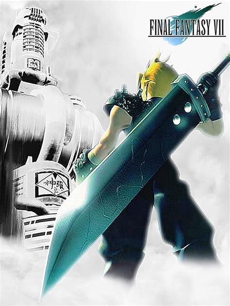

I REALLY like SILENT HILL 2!
The game is rich in atmosphere, the story continues to keep a player wondering why James is in Silent Hill.
The game is also terrifying in a unique way. There are many times where a player may be tricked into thinking something is there, watching, when really there is nothing at all, just atmosphere.
The games OST is also incredibly memorable, some tracks being used in remixes to this day. It invokes a plethora of different feelings within the player.
| Category | Score |
|---|---|
| Graphics | 8/10 |
| Gameplay | 7/10 |
| Replayability | 8/10 |
FINAL FANTASY VII

This game means an incredible amount to me, in both story and game mechanics. The world you see in this game, broken and desolate, is a direct inspiration for 'Project: S'
The world of Gaia is wasting away due to Shinra, the planet's biggest corporation, is draining it dry of its life, Mako. The game lays the stakes on thick, and is rarely ever afraid to show you the consequences on both sides of the conflict. This is something I desired to show within the world of Project: S, a world where it's inhabitants are ruled under an iron fist as they all slowly waste away.
The music is incredibly memorable, and at the time was revolutionary. The track "One-Winged Angel" was one of the only tracks in a video game to contain real vocals, this gave the final showdown with Sephiroth the importance it truly deserved, and made me and many other players truly feel like you were battling the inevitable.
The combat is incredibly simple, though a hard thing to truly master. The game gives you baseline mechanics, and it's up to you as the player to build on those mechanics and push the boundaries of what you can do. There are thousands of Materia combinations that a player could discover during a playthrough. The limit breaks were a great way to build upon what was seen in FINAL FANTASY VI.
The visuals, while they may be dated now, at the time were something to be marvelled at. While the FINAL FANTASY franchise up until this point did have a following in the West, it was this insatllment that kicked the franchise into the mainstream.
| Category | Score |
|---|---|
| Graphics | 7/10 |
| Gameplay | 9/10 |
| Replayability | 10/10 |